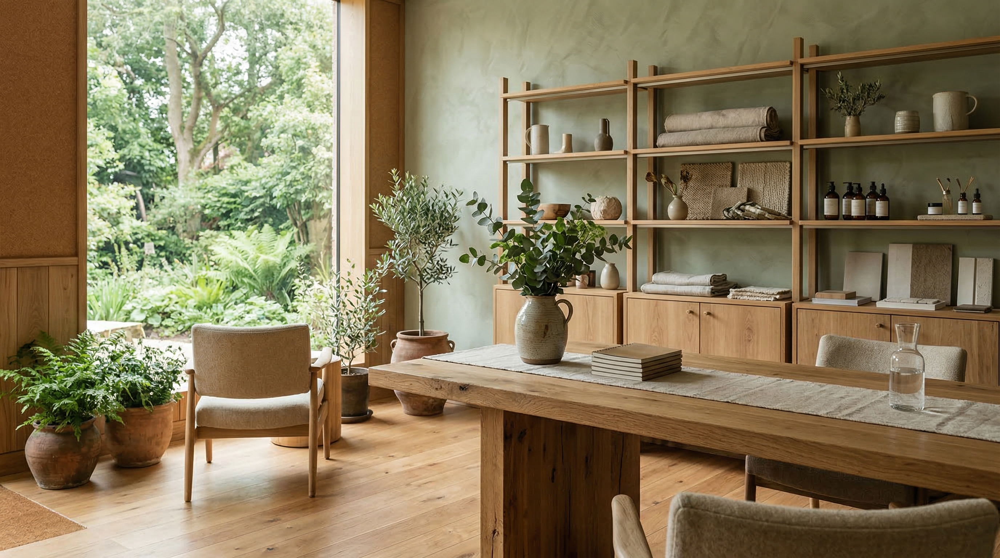

01
食品ブランド
原料調達、表示、包装、店頭訴求までを一つの体験として整えます。
- 調達背景の整理
- 包装仕様の見直し
- 店頭POPとEC説明の再設計

About Us
Verdant Global は、食品ブランド、日用品ブランド、小売事業の現場で、調達、包装、売場、回収までをつなぐ設計支援を行っています。
Since
2014
Projects
86件
Partners
41社
Mission
良い取り組みでも、包装コスト、棚割り、説明導線が噛み合わなければ継続しません。私たちは、理想像よりも先に現場で回る条件を整理します。
ブランドらしさとオペレーションの両方を見ながら、導入後に残る仕組みだけを提案するのが基本姿勢です。
Selection Criteria
原料や資材の選び方まで確認し、ストーリーと実態のズレを減らします。
店頭やECで理解される言葉と見せ方に直せるかを重視します。
導入後の回収、報告、改善会議まで含めて継続設計できるかを確認します。
Project Categories
01
原料調達、表示、包装、店頭訴求までを一つの体験として整えます。
02
資材切替だけでなく、SKU整理、物流条件、店頭陳列への影響も見ます。
03
売場改善、回収導線、スタッフ説明の設計を通じて、現場で続く施策にします。
How We Work
支援領域が広いほど、見落としやすいのは包装と売場、売場と回収のつながりです。領域ごとに論点を固定して、判断漏れを防ぎます。
案件カテゴリを先に切ることで、クライアント側でも関係部署と話しやすくなり、導入判断が早くなります。
What Changes
Procurement
調達と表示の整合性が取れている。
Packaging
包装仕様が物流条件と矛盾していない。
Storefront
売場で生活者に伝わる言葉になっている。
Collection
回収後の運用と報告指標が定義されている。